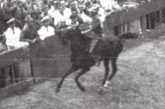

|
|
 |
16 agosto 1962
DRAGO
|
L'ordine è quello di entrata fra i canapi e il grassetto indica la vincitrice
In questo colore le contrade estratte a sorte
Cliccando sui nomi dei cavalli, su quelli dei fantini e sulle immagini, si apriranno le relative pagine
* Fantino esordiente
MOSSIERE: Carlo Andrea Fagnani 


Priore: Mario Calamati
Vicario: Enrico Giannelli
Pro Vicario: Alberto Rossi
Capitano: Kinda Barzellotti
Tenenti: Lamberto Belatti, Enrico Giannelli
Barbaresco: Mario Bianciardi
La contrada non vinceva dal 20 agosto 1945
Primo Palio vinto da questo fantino


|
Torna la star Uberta e tocca alla Civetta che, visto l’esilio del Gentili, non può riformare l’accoppiata vincente del settembre 1960 e si affida al mediocre Bozzolo.
Il Nicchio è l’altra favorita con Vittorino ed Elena de Mores che, tuttavia, non è in buone condizioni e disputa solo la prima prova.
Il bizzoso Topolone tocca al Leocorno che monta Pennello, preferito a Canapino.
Chiocciola ed Istrice, possibili sorprese, si scambiano il fantino dopo la terza prova: Tristezza va in San Marco e Lazzaro in Camollia.
Di nuovo una mossa perfetta data da Andrea Fagnani, escono prime il Drago e l’Onda, poco più dietro la Torre, il Nicchio, la Pantera e la favorita Civetta, il Leocorno, invece, è nettamente sorpreso dall’ingresso di Lazzaro.
Al primo San Martino il Drago gira primo tallonato dal Nicchio, cade la Chiocciola ed il Leocorno che sfruttando la grande potenza di Topolone inizia a rimontare, la Civetta resta imbottigliata e sembra tagliata fuori già dalle prime battute.
Al primo Casato, col Drago sempre primo, cascano il Nicchio e la Selva, con Mezzetto che era rientrato tra i primi, anche l’Istrice assaggia il tufo ed Uberta inizia la sua strepitosa rimonta.
Le posizioni si consolidano durante il secondo giro con il Drago seguito dalla Civetta e dallo scosso del Nicchio.
All’inizio dell’ultimo giro si concretizza la rimonta della Civetta ma, a San Martino, Bozzolo gira malissimo e cade lasciando il definitivo via libera a Canapetta che para Uberta al Casato e vince il suo primo Palio.
Per il Drago ritorna la festa, attesa dal Palio della Pace e si apre il ciclo d’oro firmato da Kinda Barzellotti, la cuffia passa alla Pantera.
(Da "Daccelo!" di Roberto Filiani)
|


|
|
|